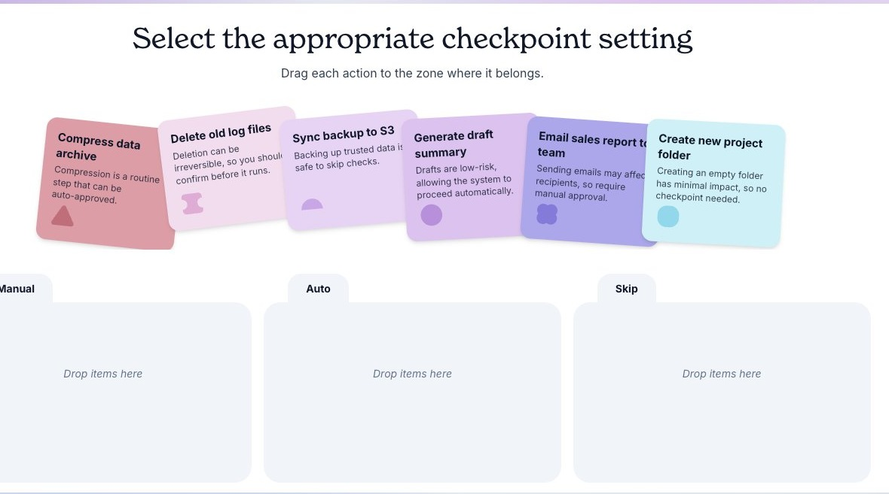
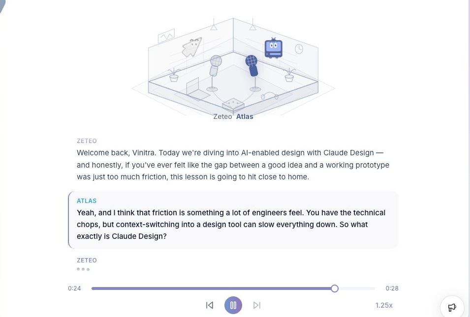
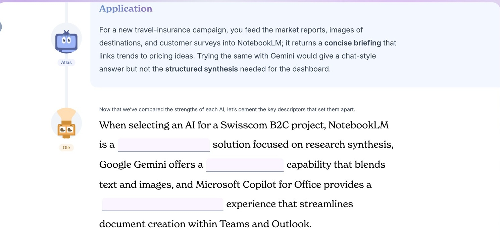
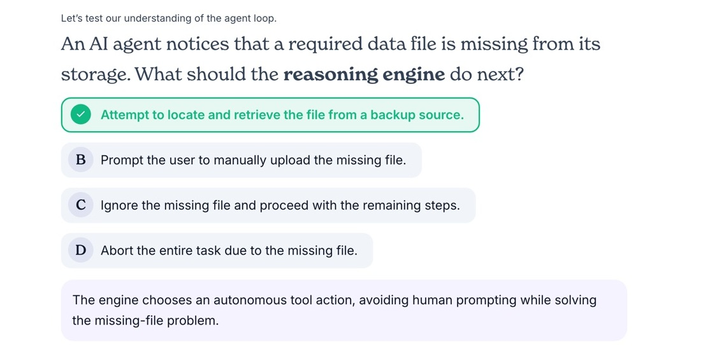
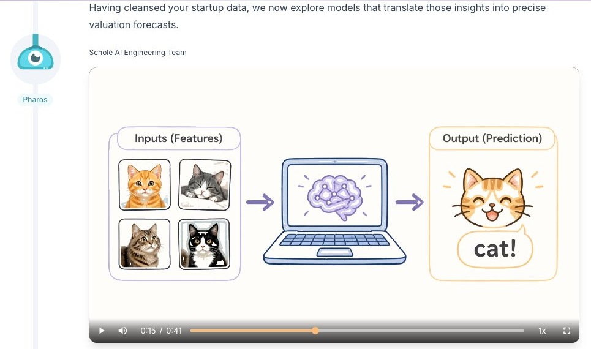
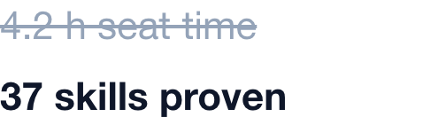

Role-specific training that your team will want to use.
Corporate training today:
99%
of people pay attention to corporate training.
<0%
finish a typical MOOC course.

Training on Scholé:
0%
of Scholé learners actively engage with their training.
0%
of people finish Scholé lessons.
96% of learning on Scholé is active, not passive.
Content gets skimmed. Practice gets done. Ours can't be skimmed. every task takes about 27 seconds and requires an answer.
~50% first-try accuracy keeps learners near their Zone of Proximal Development.
Challenging enough to stretch each learner, with enough support to keep progress moving.
One in five tasks is completed on a weekend.
Nobody does compliance training on a Saturday. Unless they actually enjoy it.





Scholé is designed by learning engineers, so the knowledge sticks. The method comes straight out of learning science: your people pay attention, get challenged, retain what they learn and use it in the actual work.
XP fills with every completed task.
First use case? Get your teams to understand AI with Scholé.
Host any content: your courses, Scholé's catalog, or both.
Adaptive delivery that meets each learner where they are.
Olé, the AI coach, available inside every course.

Skills and hours saved, tracked, not just seat time.
SSO with SAML and SCIM provisioning. Your directory stays the source of truth.
SCORM, xAPI and an API, so it drops into your existing stack.
Dashboards for learners, managers and L&D leaders.
Security review support, a signed DPA, a documented data flow.
Scholé closes the gap between hosting training and proving it worked. Built on EPFL research, measured on outcomes, and ready for the controls enterprise buyers ask for.
Book a meeting with usLoved by learners at
We're co-teaching Harvard's AI Intensives, built with researchers from Berkeley and EPFL.